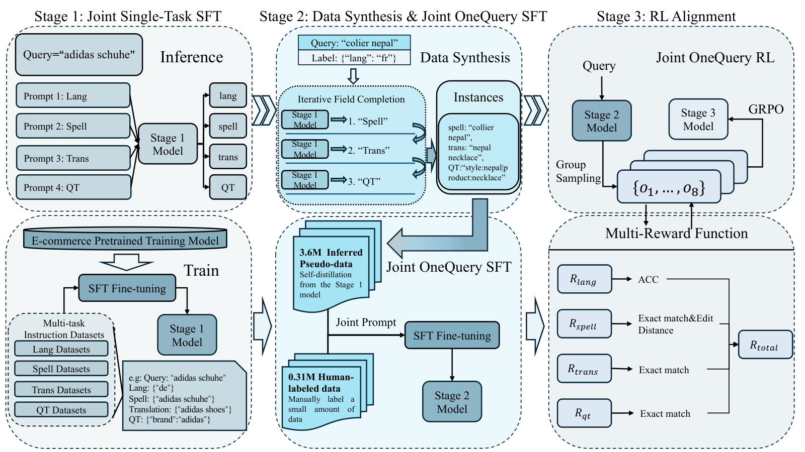
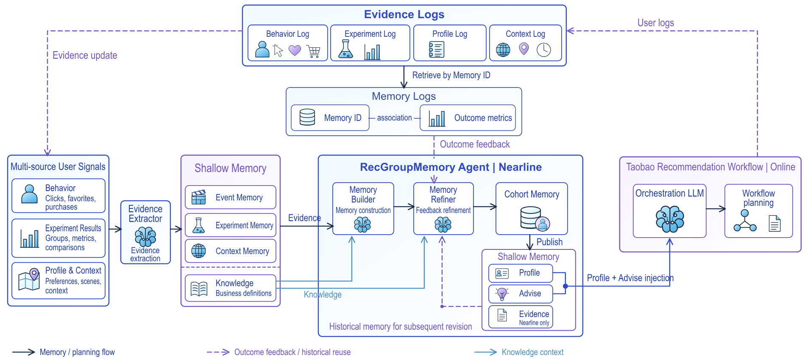

Contents · 5 sections
1Search “digitalizar video 8mm” gets translated as “scan,” and tagging never sees the original query: how OneQuery does all four stages in one generation2The pipeline locks upstream errors into the tags3Generating all four fields at once, learning structure from incomplete labels4The reward can't just copy the evaluation metrics5The model behind the offline gains isn't the one serving onlineSHARE
Search “digitalizar video 8mm” gets translated as “scan,” and tagging never sees the original query: how OneQuery does all four stages in one generation
"digitalizar video 8mm" is a Spanish query from someone looking for a service or device to digitize 8mm videotape. Both the conventional query-understanding pipeline and OneQuery translate it as "scan 8mm video," even though "digitize 8mm video" fits better. When it comes time to tag the query, though, the pipeline writes the keyword as scan while OneQuery writes digitize. The translation is just as imprecise, yet the tag doesn't get pulled off course.
The issue is how the pipeline is wired. Multilingual e-commerce search usually breaks query understanding into four separate models: language identification, spelling correction, English translation, and Query Tagging (QT, which assigns structured semantic tags to the query). Each module is trained on its own data and objective, then chained in a fixed order online. Once a query is classified as non-English, it goes through spelling correction, gets translated, and only the resulting English reaches QT. Downstream stages never see the raw query; they only work from whatever the upstream stage handed them. Misclassify the language and translation gets skipped; skew the translation and QT is stuck with that skewed English.
OneQuery, submitted to WSDM 2027 by Alibaba Group, Xiamen University, and Harbin Institute of Technology, Shenzhen, targets multilingual search on AliExpress. It collapses all four tasks into a single schema-constrained JSON object and has one e-commerce domain LLM generate the whole thing in a single pass. On an evaluation set of 19,087 multilingual queries from AliExpress online logs, all annotated by domain experts, a 14B backbone beats the existing production pipeline of independent models across the board: language-identification accuracy climbs from 0.9514 to 0.9665, translation ROUGE-2 from 78.20 to 80.50, spelling-correction F1 from 0.8568 to 0.8717, and QT F1 from 0.8128 to 0.8366. Generating the four fields together does not trade one metric down to lift another, and the same recipe largely holds at 4B and 8B.
The 14B model does not serve live traffic directly. Head queries are precomputed offline with the 14B and cached, while the long tail goes to a 0.3B student distilled from the 14B's outputs. In a multi-country A/B test, list-to-pay conversion (L2P) rose 0.5%, and side-by-side human relevance (SBS) rose 0.8 pt.
The paper's main argument is for joint generation over a stronger standalone translation module: keeping the original query in context lets QT recover intent even when the translation is imperfect. These numbers were run on ME-LLM5.2, continually pre-trained in the e-commerce domain, and what runs online is not the 14B itself.
The pipeline locks upstream errors into the tags
Figure 1 lays out the chain plainly. Above the dashed line, each of the four models runs SFT on its own data; below it sits the online serving path: Language → Spell → Translation → QT. Taking the German query "karrosseriescheiben" as an example, language identification outputs De, spelling correction leaves it untouched, translation turns it into "body washers," and QT emits Crowd:body, Product:washers. Whether that specific example lands right matters less than the direction of the arrows: every box only passes along whatever came out of the box to its left.

Source: paper Figure 1. Above the line, each module is trained separately; below it, they run in a fixed serial order, so downstream stages only see upstream output instead of the original query.
A second evaluation case shows that lock-in even more clearly. In "escape yamaha mt 07," escape is a common English word, so the pipeline classifies the query as English, skips translation, and passes the raw query to QT, which tags escape as MODEL (model number). OneQuery's Stage-3 model instead recognizes it as Spanish: yamaha and mt 07 point to motorcycle parts, where escape means an exhaust pipe rather than the English verb. It translates the query as "yamaha mt 07 exhaust" and tags BRAND (brand) yamaha, MODEL mt 07, PRODUCT (product) exhaust. Miss that first language call, and both translation and tagging drift off with it.
Generating all four fields at once, learning structure from incomplete labels
The authors' design is to generate all four fields in a single pass, so the tagger can also see the original query. Given the raw query x, the model emits a single JSON object containing the language label lang, the spell-corrected query spell, the English translation trans, and the structured semantic tags qt.
Complete four-field annotations are expensive, and most existing data only labels one task per query. The authors split post-training into three stages (Figure 2). Stage 1 pools samples from all four tasks and runs SFT, supervising only the labeled field on each example while an Active Subtask marker in the prompt specifies which task is requested. The goal here is just to pack all four single-task skills into one model, without yet asking for a full JSON in one shot. Hoot says

Stage 1 (illustrative)
- labels already on this example
- only the corrected query
- what is supervised
- only that one field; the prompt's Active Subtask marks the current task
- the three missing fields
- they stay out of the loss, and the model is not asked for a full JSON yet
Goal: fold the four single-task skills into one model first.
Stage 2 (illustrative)
- existing human labels
- the spelling field is kept; the model does not overwrite it
- where missing fields come from
- the Stage-1 model fills in language, translation, and QT
- what gets into the training set
- it must parse as valid JSON, and QT entities must match the translation
Only then does joint SFT, with a unified prompt, train the model to emit all four fields at once.
Suppose an example is labeled only for spelling correction, with language, translation, and QT left blank (illustrative; the article does not give this example). The left column is Stage 1: only the field that is already labeled is supervised. The right column is Stage 2: human labels stay, missing fields are filled by the Stage-1 model, and the completed record must parse as valid JSON and keep QT entities consistent with the translation before it is used to train four-field generation.
Source
This section: Stage 1 single-field SFT; Stage 2 Iterative Field Completion (keep human labels, fill with the Stage-1 model, JSON and cross-task consistency checks) then joint SFT. The example record is illustrative, not an instance from the paper.Stage 2 is where the model starts generating all four fields together, using Iterative Field Completion. Any human label already present on an example stays untouched, and the Stage-1 model fills in the missing fields. Outputs that fail JSON parsing get dropped, followed by a cross-task consistency check: for instance, entities extracted by QT have to match the wording in the translation. That filtering leaves 3.6 million pseudo-labeled examples. Mixed with 310,000 human annotations, they feed into joint SFT starting from the Stage-1 weights, using a unified prompt worded as close to Stage 1 as possible.

Source: paper Figure 2. Left: single-task SFT foundation; middle: filling in missing labels with the Stage-1 model for joint SFT; right: GRPO with four rule-based rewards.
Mixing in the pseudo data doesn't lift every metric. Joint SFT on the 310,000 human annotations alone already reaches 0.9644 language-identification accuracy and 0.8183 QT F1. Once the 3.6 million pseudo-labeled examples are added, translation ROUGE-2 climbs from 73.61 to 78.53 and spelling-correction F1 rises from 0.8585 to 0.8679, because large-scale multilingual completion broadens coverage of translations and spelling errors. Language identification, however, drops to 0.9547, and QT F1 slips slightly to 0.8159. The extra diversity helps translation and spelling, while bringing in noise that drags down language identification and tagging.
The reward can't just copy the evaluation metrics
Joint SFT gets the model emitting complete JSON in one pass, but it still optimizes token-level likelihood over the whole output, and mixing in pseudo data has already knocked language identification down a notch. The authors also worry about shortcuts, such as defaulting to English whenever a high-frequency English word shows up. So Stage 3 moves to GRPO: for each query, it samples G=8 outputs and computes relative advantages from the group mean and standard deviation, skipping a separate value network. All rewards are rule-based, with no trained reward model. They are computed on 31,000 examples drawn at random from the 310,000 human annotations and scored against those human labels, not the Stage-2 pseudo labels.
Total reward is a weighted sum of four terms:
R_total = w1 · R_lang + w2 · R_spell + w3 · R_trans + w4 · R_qt
Language identification uses normalized exact match. Spelling correction is trickier: a query can have more than one acceptable fix, and strict exact match would zero out near-misses. So the reward first checks whether the query needs editing. If it does, a fully correct rewrite scores 1, and anything short of that gets a partial score of λ · Edit with λ=0.3. If the query should be left alone, keeping it unchanged scores 1 and any edit scores 0. Translation and QT stick to exact match. Query translations are short and tightly tied to specific fields, so a soft word-overlap score can reward a translation whose meaning has already drifted. For QT, both prediction and label are parsed into sets of (entity type, text) pairs, scoring 1 only on an exact set match.
Plugging each task's own evaluation metric straight in as its reward turns out to be the weakest of the four designs: exact match for language and spelling, the mean of ROUGE-1, ROUGE-2, and ROUGE-L for translation, and F1 for QT. The authors' explanation is that GRPO normalizes within each group: when continuous scores cluster in a narrow range, sampling noise easily dominates within-group differences and degrades the signal-to-noise ratio of the advantage estimates. Switching everything to 0/1 exact match plus edit distance for spelling pulls translation and QT back up, yet spelling F1 drops to 0.8566, below Stage 2's 0.8679. Different reward scales mixed into one joint optimization may suppress one another.
They settle on weights of (0.35, 0.25, 0.25, 0.15). The fields are generated autoregressively in order, and earlier fields constrain more of what follows, so the authors give language identification the highest weight and QT the lowest, which also recovers the language-identification drop from adding pseudo data. That setup comes out ahead of the other designs on all four metrics: 0.9665 language accuracy, 80.50 translation ROUGE-2, 0.8717 spelling-correction F1, and 0.8366 QT F1. On the KL coefficient, β=0.01 beats a tighter 0.1, lifting QT F1 by 1.12 points; clamp KL too hard and the policy tends to stay pinned near the SFT reference model.
The model behind the offline gains isn't the one serving online
Here are the stage-by-stage numbers on the 14B backbone. The baseline is the production pipeline described above; Qwen3.8-Max and GPT-5.6 Luna are evaluated few-shot with the same OneQuery instructions, without fine-tuning.
| Method | Lang Acc | Trans ROUGE-2 | Spell F1 | QT F1 |
|---|---|---|---|---|
| Pipeline | 0.9514 | 78.20 | 0.8568 | 0.8128 |
| Stage 1 | 0.9505 | 78.24 | 0.8578 | 0.8144 |
| Stage 2 | 0.9547 | 78.53 | 0.8679 | 0.8159 |
| Stage 3 | 0.9665 | 80.50 | 0.8717 | 0.8366 |
| Qwen3.8-Max few-shot | 0.9469 | 71.54 | 0.8345 | 0.6403 |
| GPT-5.6 Luna few-shot | 0.9505 | 66.16 | 0.8327 | 0.6268 |
Source: paper Table 1, 14B backbone and same-instruction few-shot comparisons.
Stage 1 roughly ties the pipeline, so packing all four tasks into one model does not hurt single-task scores. The real separation comes from Stage-2 data and Stage-3 alignment, with QT moving the most: F1 rises from 0.8128 to 0.8366, Precision from 0.8164 to 0.8406, and Recall from 0.8093 to 0.8326, both climbing together. That squares with the opening "digitalizar" example. Sitting at the tail end of a serial pipeline meant QT had to absorb every upstream mistake; generating all four fields together from the raw query means a skewed translation no longer has to drag the tags down with it.
Running the same data and hyperparameters through all three stages at 8B and 4B produces roughly the same pattern. In the cross-scale comparison, Table 1 reports an independent single-task Pipeline row for each backbone. Language identification improves over that scale's own Pipeline row by 1.51, 1.49, and 1.57 points respectively (14B / 8B / 4B), QT F1 by 2.38, 2.72, and 2.22 points, and translation ROUGE-2 by 2.30, 3.19, and 2.70; the recipe isn't tied to a single model scale. Spelling correction is the exception. At 8B, Stage-3 F1 lands at 0.8513, which does not surpass the 8B Pipeline row's 0.8529. At 4B, Stage 3 reaches 0.8428, ahead of the 4B Pipeline's 0.8365, but still short of that scale's Stage 2 score of 0.8475. Spelling correction leans harder on model capacity.
Comparing against general-purpose LLMs makes the value of domain post-training hard to miss. Evaluated few-shot without fine-tuning, both models are still decent at language identification, yet their QT F1 sits at 0.6403 and 0.6268—about 20 points below the 14B Stage 3—and translation ROUGE-2 falls to 71.54 and 66.16. On spelling correction, Recall is highest while Precision lags clearly behind, as they tend to rewrite queries that were already correct. Using a stronger general-purpose model to fill in missing fields would be especially shaky on QT, since those models don't know the platform's tag vocabulary. Self-distilling with the Stage-1 model is primarily about protecting completed-label quality, beyond saving annotation cost.
In production, the 14B stays off the real-time serving path. It runs offline inference over large-scale query logs so head queries can be served straight from a cache, while the remaining long tail goes in real time to the 0.3B student distilled from the 14B's outputs, letting the system run under tighter latency constraints. In a multi-country A/B test against the existing query-understanding system, L2P rose 0.5% and SBS relevance rose 0.8 pt, holding steady over the course of the experiment. The 14B in the offline table is not the model serving live traffic.
How did this read for you?
Hoot made a note. Thanks for the feedback.
One tap, no sign-in; tap again to undo. Only anonymous counts are kept, never who you are.
Related papersMore from Paper Daily
 Retrieval · 2026-10-29Tessera: Structure-Completed Evidence Units for Web Retrieval-Augmented GenerationAsk Wikipedia who produced Willy Wonka and the Chocolate Factory, and the answer sits in the producer row of the page's infobox. Text extraction drops the two names in that cell, the reader model sees only the director, and it answers wrong. Tracing answer evidence from page source to reader input over all of English Wikipedia, this paper finds such loss is common: for 7.6% of questions the evide…
Retrieval · 2026-10-29Tessera: Structure-Completed Evidence Units for Web Retrieval-Augmented GenerationAsk Wikipedia who produced Willy Wonka and the Chocolate Factory, and the answer sits in the producer row of the page's infobox. Text extraction drops the two names in that cell, the reader model sees only the director, and it answers wrong. Tracing answer evidence from page source to reader input over all of English Wikipedia, this paper finds such loss is common: for 7.6% of questions the evide… Generative · 2026-11-02UGR: Unified Generative Ranking for Heterogeneous E-commerce RecommendationTaobao's generative ranking framework UGR has one generative model directly produce the screen the user finally sees. The roughly one thousand organic, ad and other-business candidates of a request go to the model together, and it generates the final list item by item, instead of each business ranking its own items and a blending stage stitching them together. That stitching step is the old probl…
Generative · 2026-11-02UGR: Unified Generative Ranking for Heterogeneous E-commerce RecommendationTaobao's generative ranking framework UGR has one generative model directly produce the screen the user finally sees. The roughly one thousand organic, ad and other-business candidates of a request go to the model together, and it generates the final list item by item, instead of each business ranking its own items and a blending stage stitching them together. That stitching step is the old probl… Retrieval · 2026-11-13Beyond Query-Item Matching: Personalized Behavioral Relevance Modeling for E-commerce Search via Rubric-Guided Reinforcement LearningE-commerce search usually has a relevance model sort candidates into tiers by text match between query and item, then hands them to a CTR model, so an item the user clearly prefers can get little exposure just because it landed in a low tier. This work from Alibaba's 1688 moves part of personalization into the relevance step: an LLM reads the user's same-day, recent and long-term search and purch…
Retrieval · 2026-11-13Beyond Query-Item Matching: Personalized Behavioral Relevance Modeling for E-commerce Search via Rubric-Guided Reinforcement LearningE-commerce search usually has a relevance model sort candidates into tiers by text match between query and item, then hands them to a CTR model, so an item the user clearly prefers can get little exposure just because it landed in a low tier. This work from Alibaba's 1688 moves part of personalization into the relevance step: an LLM reads the user's same-day, recent and long-term search and purch…
Generative · 2026-11-09RecGroupMemory: Feedback-Aware Cohort Memory for E-Commerce RecommendationWhen a large model plans a recommendation workflow, it can be given memory of how a group of users has behaved. The difficulty is that new transaction feedback arrives the next day and the advice should change, while the record of the group definition, the observation window and the statistics must not be rewritten along the way. RecGroupMemory splits the memory in two layers. One is a read-only… Personalization · 2026-10-30Multi-Branch Cooperation Networks for Enhanced Click-Through Rate Prediction in Large-Scale E-Commerce SearchRanking teams should read this one, because it points out an often overlooked waste in multi-branch models: the branches are good at different samples, yet never learn from each other in training. The Pailitao team at Taobao (search by photo) makes three branches correct each other during training. On a given sample, if one branch gets the click right and another gets it wrong, the right branch's…
Personalization · 2026-10-30Multi-Branch Cooperation Networks for Enhanced Click-Through Rate Prediction in Large-Scale E-Commerce SearchRanking teams should read this one, because it points out an often overlooked waste in multi-branch models: the branches are good at different samples, yet never learn from each other in training. The Pailitao team at Taobao (search by photo) makes three branches correct each other during training. On a given sample, if one branch gets the click right and another gets it wrong, the right branch's… Generative · 2026-11-17RecMem: Recurrent Memory Compression for Long-Sequence Generative RecommendationOnce a generative recommender feeds a user's long history straight into the model, compute and memory grow with history length, and long interaction sequences quickly become slow and expensive. The authors compress history segment by segment into a fixed number of memory slots, and the decoder uses a fixed-length context that no longer expands as the history grows. On a long-sequence benchmark fr…
Generative · 2026-11-17RecMem: Recurrent Memory Compression for Long-Sequence Generative RecommendationOnce a generative recommender feeds a user's long history straight into the model, compute and memory grow with history length, and long interaction sequences quickly become slow and expensive. The authors compress history segment by segment into a fixed number of memory slots, and the decoder uses a fixed-length context that no longer expands as the history grows. On a long-sequence benchmark fr… Generative · 2026-11-02PFA: Attention Can Be Progressively Focused in Long-Sequence Generative RecommendationThe authors at Alibaba found that when a generative recommender decodes with beam search, attention concentrates on a few past behaviors as decoding proceeds, and which behaviors matter stays largely the same from step to step. Building on this, PFA picks the important history once for the whole decode, instead of having every beam pick it again at every step. It attends to the full history as us…
Generative · 2026-11-02PFA: Attention Can Be Progressively Focused in Long-Sequence Generative RecommendationThe authors at Alibaba found that when a generative recommender decodes with beam search, attention concentrates on a few past behaviors as decoding proceeds, and which behaviors matter stays largely the same from step to step. Building on this, PFA picks the important history once for the whole decode, instead of having every beam pick it again at every step. It attends to the full history as us… Retrieval · 2026-11-03Peeling the Matryoshka: Extracting Ontological Structure from Retrieval EmbeddingsOff-the-shelf retrieval embeddings carry taxonomy information that can be read out. The authors find that embeddings trained with Matryoshka Representation Learning (MRL) put taxonomy information mainly in the leading dimensions. Cutting a short slice in the original order groups same-category concepts better than cutting after a shuffle or keeping the last dimensions. Building on this, PEEL trai…
Retrieval · 2026-11-03Peeling the Matryoshka: Extracting Ontological Structure from Retrieval EmbeddingsOff-the-shelf retrieval embeddings carry taxonomy information that can be read out. The authors find that embeddings trained with Matryoshka Representation Learning (MRL) put taxonomy information mainly in the leading dimensions. Cutting a short slice in the original order groups same-category concepts better than cutting after a shuffle or keeping the last dimensions. Building on this, PEEL trai…
Discussion
Add experiment details, reproduction notes or a different take. Requires a GitHub sign-in.
Loading the discussion…